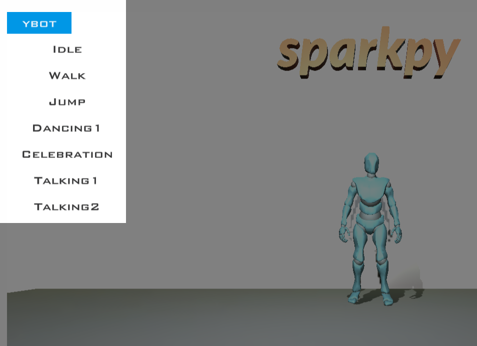

Create a character
To create a character, first make an environment then create a Character() object
import sparkpy
#create office environment
sparkpy.Environment("Office")
#create robot character
sparkpy.Character("YBot")
Note
A list of all current characters
"Amy" |
"Bryce" |
"Lewis" |
"Michelle" |
"YBot" |
"XBot" |
Character animation
Set the animation for a character using SetAnimation()
import sparkpy
#set animation example
#create office environment
sparkpy.Environment("Office")
#create robot character
robot = sparkpy.Character("YBot")
#set animation to walk
robot.SetAnimation("Walk")
#set animation speed
robot.SetAnimationSpeed(1)
Tip
A list of all available animation names for a given character is shown in the explorer view
Tip
The speed of the animation can controlled with SetAnimationSpeed()
Character movement
A character can be moved using the Move() Method
import sparkpy
#move character exaample
#create office environment
sparkpy.Environment("forest")
#create robot character at position x=0 y0 z=5
robot = sparkpy.Character("xbot",0,0,5)
#set animation to walk
robot.SetAnimation("Walk")
#move the robot for 5 seconds
robot.Move(5)
Note
you will notice that the character’s animation continues to play after the movement ends. This is behaviour can resolved using waits
Character rotation
A character can be rotated using the Rotate() Method
import sparkpy
#rotate character exaample
#create office environment
sparkpy.Environment("home")
#create a character at position 0,0,1
bryce = sparkpy.Character("bryce")
#rotate left 90 degres in 2 seconds
bryce.Rotate(90, 2, "left")
Character scale
A character can be scaled using the Scale() Method
import sparkpy
#scale character example
#create office environment
sparkpy.Environment("office")
#create a character
robot = sparkpy.Character("Ybot")
#shrink the robot to half the size
robot.Scale(0.5)
Character hide and show
A character can be hidden (invisible) using the Hide() Method
import sparkpy
#hide character exaample
#create an environment
sparkpy.Environment("forest")
#create a character at position x=0 y0 z=3
bryce = sparkpy.Character("bryce",0,0,3)
#character exists but will not be shown in the screen
bryce.Hide()
Note
A character that is hidden can be shown again using Show()
Character chat
A character can create a chat box using the Chat()
import sparkpy
#chat example
#create an environment
sparkpy.Environment("home")
#create a character
bryce = sparkpy.Character("bryce")
#create a chat box for 5 seconds
bryce.Chat("Hello World", 5)
Control character with keyboard
To move a character with the keyboard, use the ControlMode() method A character can be controlled in third person mode using ‘third_person’ as the SetControlMode parameter
import sparkpy
#control character with keyboard example
#create office environment
sparkpy.Environment("Office")
#create robot character
robot = sparkpy.Character("YBot")
#set control mode to keyboard
robot.ControlMode("keyboard")
Control character with keyboard 3rd Person
To move a character with the keyboard, use the ControlMode() method A character can be controlled in third person mode using ‘third_person’ as the SetControlMode parameter
import sparkpy
#control character with keyboard example
#create an environment
sparkpy.Environment("Forest")
#create robot character
robot = sparkpy.Character("YBot")
#set control mode to keyboard
robot.ControlMode("third_person")